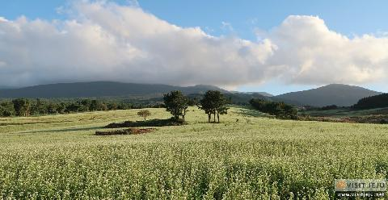
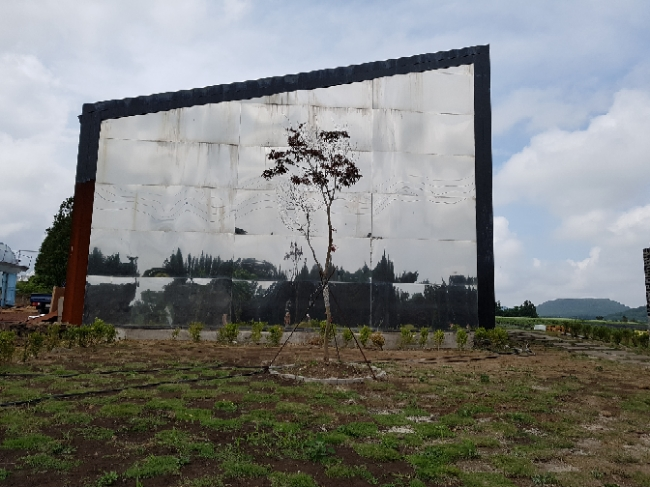
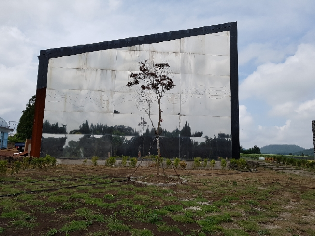
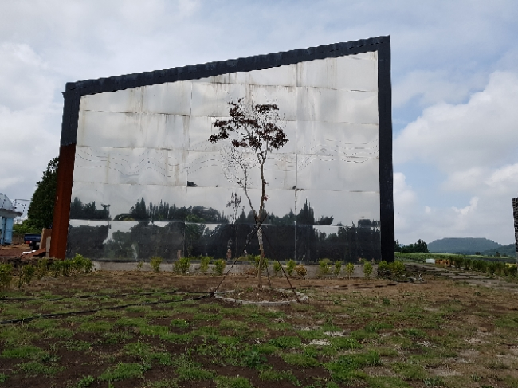

 




메밀꽃밭
#제주도 #메밀꽃밭
insta
map
관음사에서 1100로로 이어지는 중산간 길목에 자리한 이곳은 계절에 따라 청보리나 메밀꽃밭으로 바뀌는 유명한 포토스팟이다.
끝이 보이지 않을 만큼 너른 부지에 늦겨울-봄에는 청보리가 넘실대고, 봄-여름에는 메밀꽃이 포슬포슬 내려앉는다.
북쪽으로는 제주바다가 아련히 보이고 남쪽으로는 병풍같이 한라산이 서있어 풍경이 아름답기로는 더할 나위가 없다.
시즌별로 청보리 축제와 메밀꽃 축제를 진행해 왔으며, 아름다운 자연을 배경으로 사진을 찍기 위해 많은 관광객이 발걸음 하고 있다.
끝이 보이지 않을 만큼 너른 부지에 늦겨울-봄에는 청보리가 넘실대고, 봄-여름에는 메밀꽃이 포슬포슬 내려앉는다.
북쪽으로는 제주바다가 아련히 보이고 남쪽으로는 병풍같이 한라산이 서있어 풍경이 아름답기로는 더할 나위가 없다.
시즌별로 청보리 축제와 메밀꽃 축제를 진행해 왔으며, 아름다운 자연을 배경으로 사진을 찍기 위해 많은 관광객이 발걸음 하고 있다.
제주특별자치도 제주시 오라2동 산76